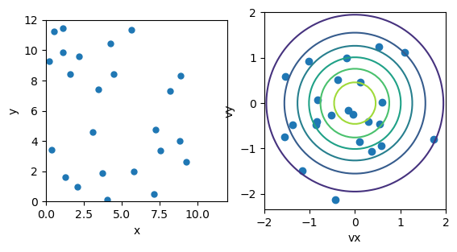
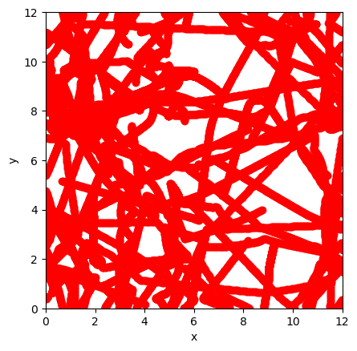
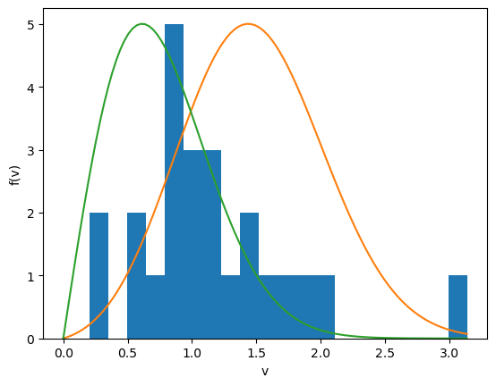

import numpy as np
import matplotlib.pyplot as plt
import matplotlib.animation as animation
class particles: #class to hold particle information
def __init__(self,N,vmax,Lx,Ly,dt,tfinal,sigma,epsilon):
self.N = N
self.x = np.random.rand(N)*Lx
self.y = np.random.rand(N)*Ly
self.vmax = vmax
self.vx = (-1 + 2*np.random.rand(N))*vmax
self.vy = (-1 + 2*np.random.rand(N))*vmax
self.ax = np.zeros(N)
self.ay = np.zeros(N)
self.Lx = Lx
self.Ly = Ly
self.dt = dt
self.tfinal = tfinal
self.sigma = sigma
self.epsilon = epsilon
def Maxwellian(p): #monte carlo Maxwellian initialization
vs = p.vmax*np.sqrt(-2*np.log(np.random.rand(p.N)))
rtheta = np.random.rand(p.N)
p.vx = vs*np.cos(2*np.pi*rtheta)
p.vy = vs*np.sin(2*np.pi*rtheta)
return
def plot_particles(p):
def max_func(p,vx,vy):
F = np.exp(-(vx**2 + vy**2)/(2*p.vmax**2))
return F
fig, ax = plt.subplots(1,2)
ax[0].plot(p.x,p.y,'o',markersize=5.0)
ax[0].set_xlabel('x')
ax[0].set_ylabel('y')
ax[0].set_xlim([0,p.Lx])
ax[0].set_ylim([0,p.Ly])
ax[0].set_aspect('equal')
ax[1].plot(p.vx,p.vy,'o')
ax[1].set_xlabel('vx')
ax[1].set_ylabel('vy')
ax[1].set_aspect('equal')
vx = np.linspace(-p.vmax*2, p.vmax*2, 50)
vy = np.linspace(-p.vmax*2, p.vmax*2, 50)
vX, vY = np.meshgrid(vx, vy)
Z = max_func(p,vX, vY)
ax[1].contour(vX,vY,Z)
plt.show()
def plot_distribution(p):
plt.figure(2)
vbar, vbar2, dv2 = mean_v(p)
print(vbar,dv2,np.sqrt(dv2))
h = plt.hist(np.sqrt(p.vx**2 + p.vy**2),bins=20,density=False)
v = np.linspace(0,max(np.sqrt(p.vx**2 + p.vy**2)),100)
fv = v*np.exp(-(v-vbar)**2/(2*dv2))
fv1 = v*np.exp(-(v)**2/(2*dv2))
plt.plot(v,fv*np.max(h[0])/np.max(fv))
plt.plot(v,fv1*np.max(h[0])/np.max(fv1))
plt.xlabel('v')
plt.ylabel('f(v)')
plt.show()
return
def Force(p,r,dx,dy):
ri = sigma/r
ri3 = ri**3
ri6 = ri3**2
F = 24*epsilon*(1/r)*ri6*(2*ri6 - 1)/r
if (F > 100.0):
F = 100.0
return F
def periodic(p):
p.x[p.x < 0] = p.x[p.x < 0] + p.Lx
p.y[p.y < 0] = p.y[p.y < 0] + p.Ly
p.x[p.x > p.Lx] = p.x[p.x > p.Lx] - p.Lx
p.y[p.y > p.Ly] = p.y[p.y > p.Ly] - p.Ly
return
def separation(p,dx,dy):
if (abs(dx) > 0.5*p.Lx):
dx = dx - np.sign(dx)*p.Lx
if (abs(dy) > 0.5*p.Ly):
dy = dy - np.sign(dy)*p.Ly
return dx, dy
def Accel(p):
p.ax = np.zeros(p.N)
p.ay = np.zeros(p.N)
for i in range(p.N-1):
for j in range(i+1,p.N):
dx = p.x[i] - p.x[j]
dy = p.y[i] - p.y[j]
dx, dy = separation(p,dx,dy)
r = np.sqrt(dx*dx + dy*dy)
F = Force(p,r,dx,dy)
p.ax[i] = p.ax[i] + F*dx
p.ay[i] = p.ay[i] + F*dy
p.ax[j] = p.ax[j] - F*dx #Newton's third law
p.ay[j] = p.ay[j] - F*dy
return
def Verlet(p):
p.x = p.x + p.vx*dt + 0.5*p.ax*p.dt**2
p.y = p.y + p.vy*dt + 0.5*p.ay*p.dt**2
p.vx = p.vx + 0.5*p.ax*p.dt
p.vy = p.vy + 0.5*p.ay*p.dt
periodic(p)
Accel(p)
p.vx = p.vx + 0.5*p.ax*p.dt
p.vy = p.vy + 0.5*p.ay*p.dt
return
def move_particles(p,nstep):
time = 0.0
cnt = 0
lines=[]
fig, ax = plt.subplots()
while time < p.tfinal:
Verlet(p)
time = time + p.dt
#print('time...',time/p.tfinal,energy(p))
if (cnt == nstep):
p1 = ax.plot(p.x,p.y,'ro')
lines.append(p1)
ax.set_aspect('equal')
ax.set_xlim(0,p.Lx)
ax.set_ylim(0,p.Ly)
ax.set_xlabel('x')
ax.set_ylabel('y')
cnt = 0
cnt += 1
ani = animation.ArtistAnimation(fig, lines, interval=1)
plt.show()
return
def mean_v(p):
v = np.sqrt(p.vx**2 + p.vy**2)
vbar = np.sum(v)/p.N
vbar2 = np.sum(v**2)/p.N
dv2 = vbar2 - vbar**2
return vbar,vbar2,dv2
def energy(p):
E = np.sum(p.vx**2 + p.vy**2)
return E
#------------------------------------------------------------------------------------
N = 24 #number of particles
Lx = 12 #x size of box
Ly = 12 #y size of box
sigma = 0.5 #close interaction length scale
epsilon = 1.0 #Depth of potential well
m = 1.0 #mass
tau = np.sqrt(m*sigma**2*epsilon) #non dimensional time scale
dt = 0.005 #time step
tfinal=dt*4000 #final time
vmax = 1.0*np.sqrt(epsilon/m) #non dimensional thermal velocity
p = particles(N,vmax,Lx,Ly,dt,tfinal,sigma,epsilon) #initiate data structure
Maxwellian(p) #initialize particles with Maxwellian velocity distribution based on vmax.
plot_particles(p) #plot distribution
nstep = 4 #number of time steps between animation frames.
move_particles(p,nstep) #run the simulation
plot_distribution(p) #examine velocity distribution.

1.175176823837643 0.37482791122514314 0.6122319096756907